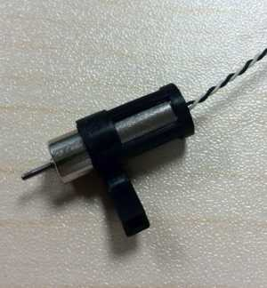
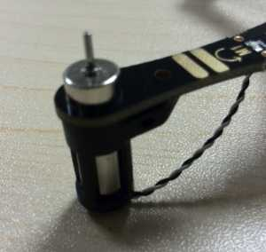
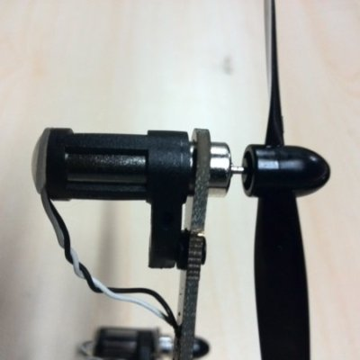
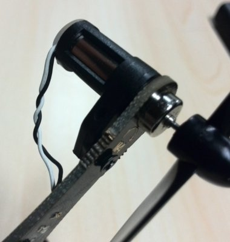
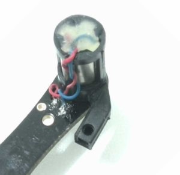
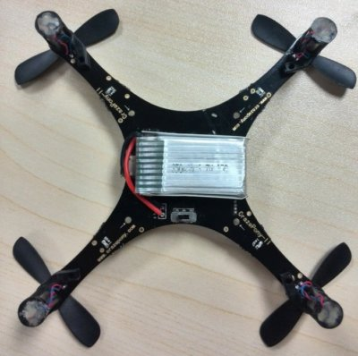
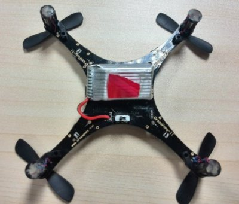
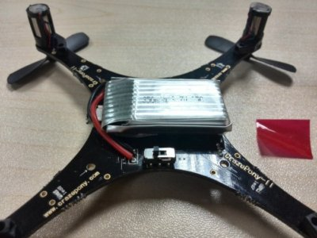
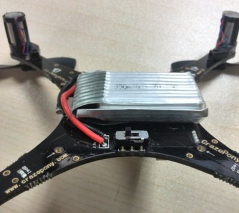

本教程適合Crazepony-II 5.1版本
從5.1版本開始，Crazepony不再提供散件銷售。本組裝教程主要目的是提供給後期的維修和改裝。
PCBA是英文Printed Circuit Board（PCB）+ Assembly的簡稱，也就是說PCB空板經過SMT貼片上件，再經過DIP插件，最後得到的元器件已經貼好的電路板，簡稱PCBA。
需要電烙鐵，螺絲刀，剪刀（或者小刀）等工具，需要有一定的DIY能力。
Crazepony主控電路板/遙控器電路板已經燒入了最新版本的代碼，並且進行了測試。用戶拿到之後可以通過以下方式對其基本功能進行測試，確保正確。
todo
將電機插入電機套內，電機供電線從電機套底部留出。注意電機一定要完全插入底部，不要留有空隙。否者，電機套保護電機底部免受挫穿的作用就沒有了。

將電機供電線扭轉成麻花狀，留足到電機焊盤長度，剪去多餘部分，最後將電機線焊接到焊盤上。電機的焊接，對應原則是，將黑線焊接到標示有+的焊盤，白線焊接到另外一個焊盤。
將電機露出電機套部分插入飛控電路板的電機孔中。這次的電機孔剛好能夠卡住整個電機。

在發貨清單中提供有2M螺絲和墊片，用於固定電機和電機套。
 
將電機套底部開一個缺口，將電機線從這個缺口引出。然後粘上提供的黑色（或者透明）的硅膠墊。這樣在多次起降撞擊的時候，不會傷到電機供電線。

到現在，整個電機的安裝就完成了。
將電池焊接到飛控板上，注意電線留出合適的長度，一般是固定在飛控板的下面，所以線是焊接到下面的。電池的紅色接飛控板的3.7v焊盤，黑色接GND焊盤。在電池上，我們已經沾上了雙面膠，將膠紙的保護膜撕掉，將電池固定於飛控板正中央。

最近發現有小夥伴盡然將電池放到了PCB的上面，而且用繩子固定的（其實上面已經沾了雙面膠）。這讓我久久不能平靜，確實是我們文檔說得不夠詳細。PCB的上面有基本上所有的元器件，容易造成短路，而且可能遮蓋了天線，導致遙控的距離縮短。下面就是幾個詳細的電池固定示意圖。最好是固定到PCB的下面。
將雙面膠撕開，準備粘貼。

將電池按照如圖所示的方位粘貼到PCB的底側，並且壓緊。

最後效果圖。

下面部分，參考《入手試飛教程》。